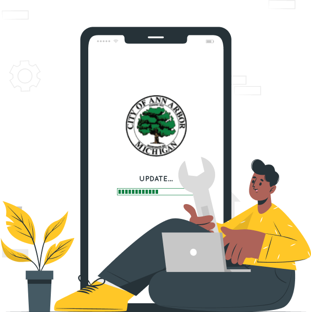

Project Introduction
Starting from September 2021, our group worked with the City of Ann Arbor Water Treatment Plant to help them identify the issues in accessing the standard operating procedures. During the 4 months, we took 6 interviews, 2 on-site visits and utilized contextual inquiry methods to help solve the problem. For example, we collected more than 400 transcripts and created an affinity wall to find the key issues.Takeaways
Collaborated with 4 teammates, I went through the whole process of collecting, integrating, and analyzing information. Picking out the useful information from the many, talking everyone's effort into account and keeping everyone on the same page are very useful skills that I learned.
